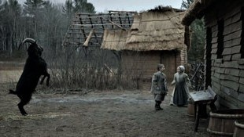
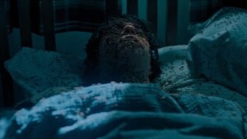

Horror evolved with intelligent, thought-provoking films that combined psychological depth, social commentary, and supernatural terror. Movies like Get Out and Hereditary pushed the genre beyond simple scares, exploring themes of trauma, identity, and societal fears while still delivering unsettling and memorable horror experiences.
A minimalist yet terrifying film, this film introduces a relentless supernatural entity that pursues its victims after any sexual contact. With a dreamlike atmosphere, eerie cinematography, and an unnerving score, the film creates a constant sense of dread, redefining supernatural horror with its unique premise and slow-burning tension.

A slow-burn folk horror film set in 1600s New England, The Witch follows a Puritan family exiled to the wilderness, where paranoia and religious extremism drive them to madness. With haunting cinematography, eerie authenticity, and psychological dread, it masterfully explores isolation, faith, and the fear of the unknown.
A psychological horror film blending racial commentary and psychological terror, Get Out follows a Black man visiting his white girlfriend’s family, only to uncover a sinister secret. With unsettling tension, social satire, and mind-bending twists, Jordan Peele’s directorial debut redefined modern horror, earning him an Oscar for Best Original Screenplay.
A disturbing family horror film that explores grief, trauma, and supernatural terror, Hereditary follows a family unraveling dark secrets after their grandmother’s death. With masterful tension, unsettling imagery, and an unforgettable performance by Toni Collette, the film builds to a shocking and nightmarish climax that lingers long after the credits roll.
| Nombre | ID | Carrera | Correo |
|---|---|---|---|
| Maria Jose Arévalo | 1094044725 | Jurisprudencia | mariaj.arevalo@urosario.edu.co |
| Daniela Cortes Rodriguez | 1095550727 | Jurisprudencia | daniela.cortesro@urosario.edu.co |